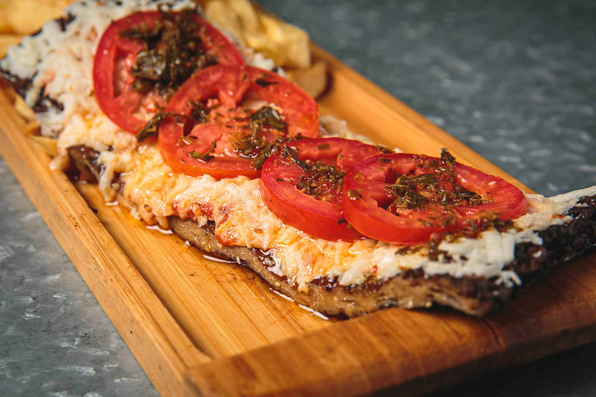
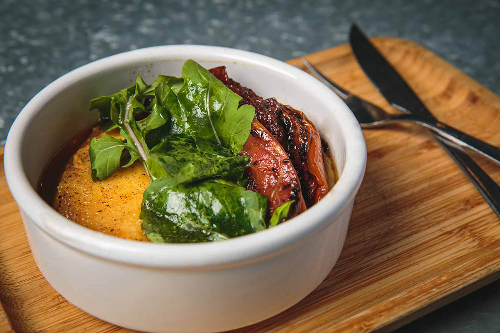
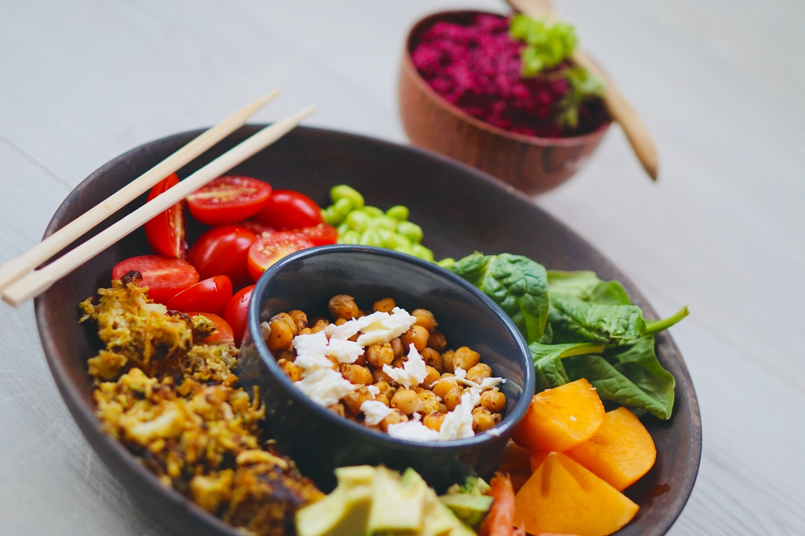
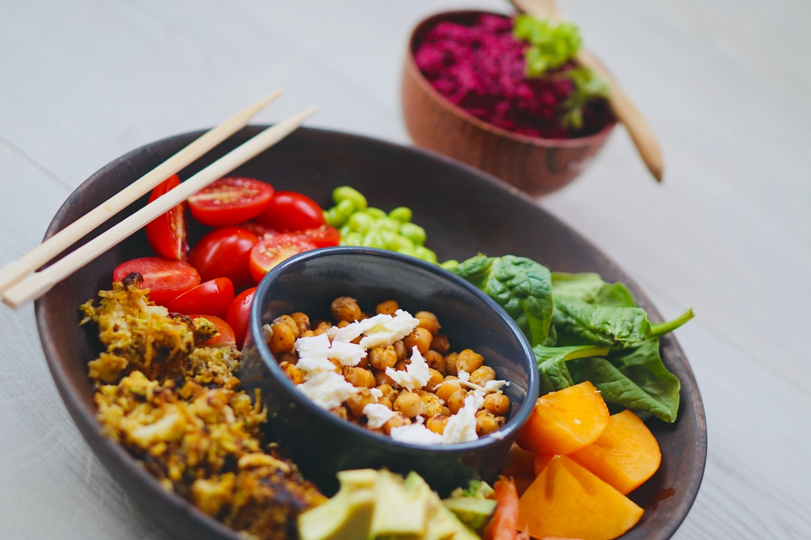
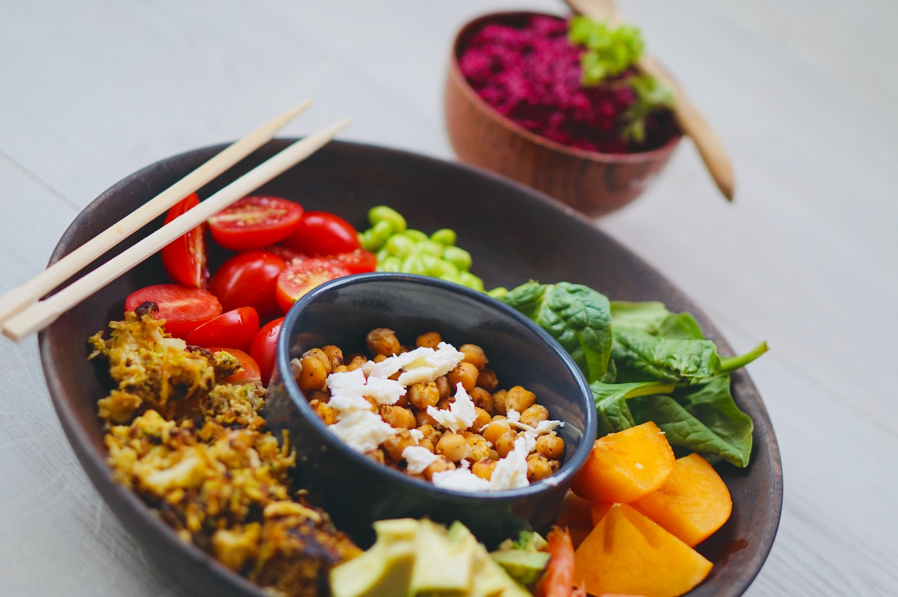

Parri Vegana
La Parri Vegana se destaca por su parrillada con asado de seitán, empanadas, postres y vinos. Todo de origen vegetal y orgánico. El objetivo fue romper con todo lo establecido y alejarnos de la asociación de vegetariano/vegano igual a las ensaladas.


 

